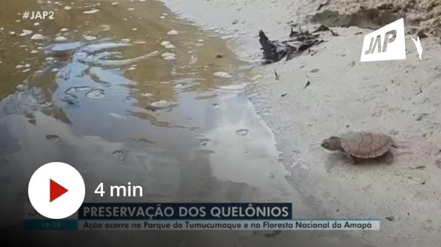
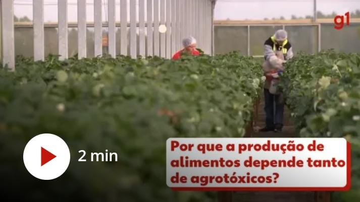
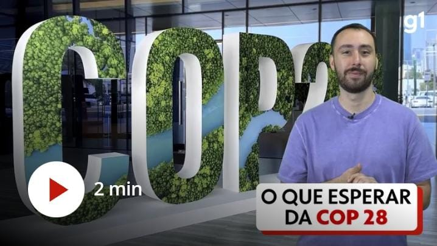

Notícias
23/11/2015
No AP, monitoramento de quelônios em parque de preservação do país
Ação do ICMBio em parceria com comunidades ribeirinhas no Parque Nacional Montanhas do Tumucumaque e na Floresta Nacional do Amapá.
Ver mais

23/11/2015
Novas espécies de peixes são encontradas pela primeira vez no Brasil
Pesquisa foi feita por pesquisadores da UFRPE, da URFJ e do Instituto Francês IRD em Fernando de Noronha e no Rio Grande do Norte.
Ver mais23/11/2015
Projeto de nova lei dos agrotóxicos: veja ponto a ponto o que pode mudar
Depois de 24 anos tramitando, texto foi aprovado no Senado e agora segue para sanção do presidente Lula.
Ver mais

23/11/2015
COP 28; saiba o que esperar da conferência sobre a crise do clima
Entenda os pontos-chave da próxima Conferência das Nações Unidas sobre Mudanças Climáticas, que acontece em Dubai, nos Emirados Árabes Unidos.
Ver mais

23/11/2015
No AP, monitoramento de quelônios em parque de preservação do país
Ação do ICMBio em parceria com comunidades ribeirinhas no Parque Nacional Montanhas do Tumucumaque e na Floresta Nacional do Amapá.
Ver mais